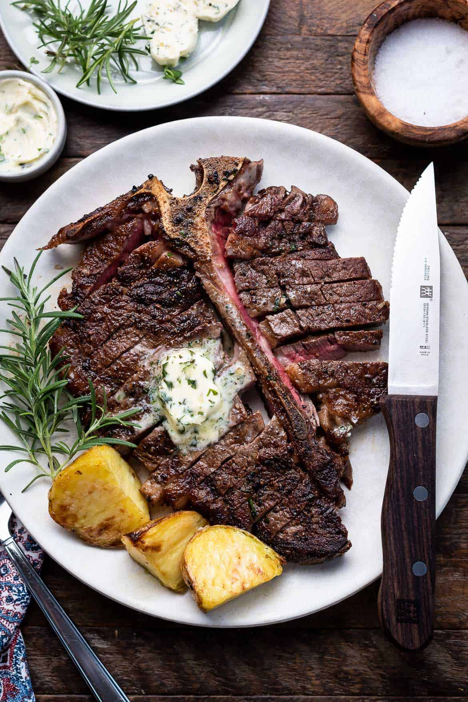

Beef Steak

Description
this is my favourite homemade dish if made by my mum
Ingredients
- onion powder
- garlic
- pepper
- soy
- beef
- olive oil
- balsamic
Steps
- season the steak
- Add the steak to a very hot pan - preferably cast iron.
- Cook for 4 minutes, turning EVRY MINUTE.
- During the last minute of cooking, add butter to the pan, plus a few lightly crushed, peeled garlic cloves and a couple of sprigs of thyme or rosemary. Baste the the steak with the butter during the last minute of cooking.
- Take out of the pan and leave to rest for at least 4-5 minutes before serving.
Go back